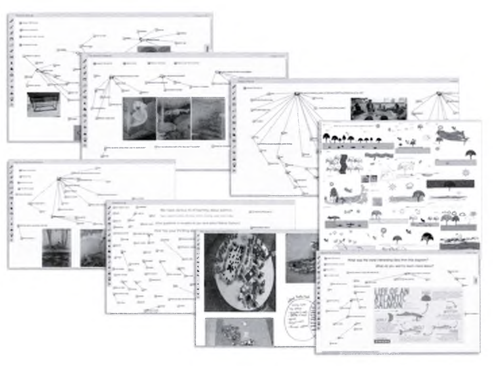
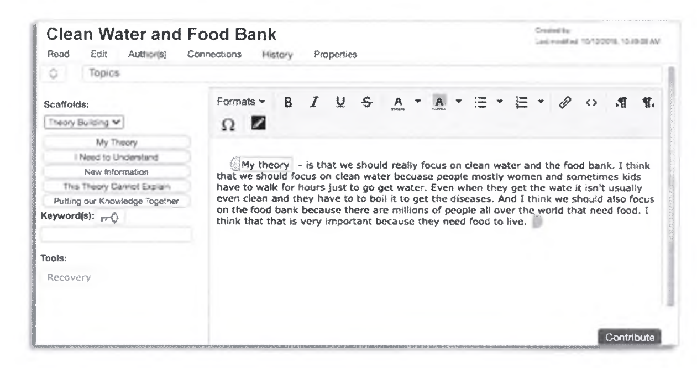
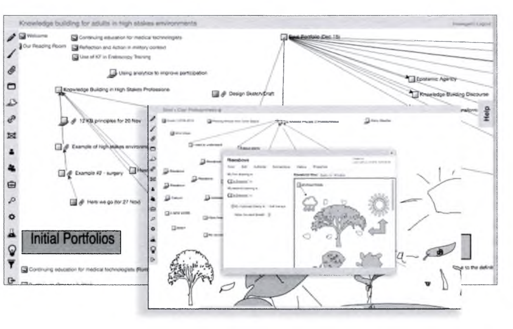
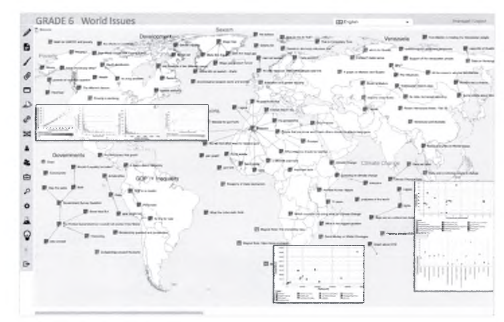
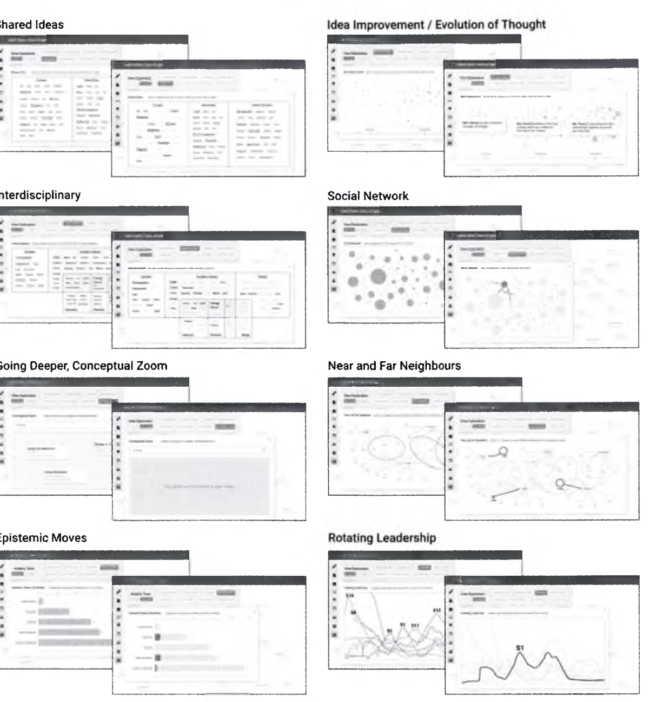

Knowledge Building and Knowledge Creation
지식 구축과 지식 창조: 학습을 넘어 지식 창조 공동체로의 패러다임 대전환
👥 저자 및 출처
Marlene Scardamalia & Carl Bereiter (University of Toronto)
『The Cambridge Handbook of the Learning Sciences』 (3rd Ed., 2022, pp. 380–400)
🎯 챕터 핵심 아젠다 (19.0 ~ 19.5)
- 19.0 학습 ➔ 지식 창조 대전환: 칼 포퍼의 세계 3(World 3)
- 19.1 지식 구축의 5대 기둥: 공동체 지식, 지속적 개선, 인식적 인공물
- 19.2 Knowledge Forum: 8대 뷰(Fig 19.1), 스캐폴드(Fig 19.2), Rise Above(Fig 19.3), 분석학(Fig 19.5)
- 19.3 AI & 인식적 주도성 / 19.4 지식 사회의 학교 혁신
🎯 강의 목표 및 핵심 맥락 (Context & Goal)
본 장은 제4부 협력과 공동체(Part IV: Learning Together)의 문을 여는 대표 챕터로, 지식을 머릿속에 집어넣는 '학습(Learning)' 패러다임을 탈피하여, 교실 공동체가 직접 가치 있는 지식을 생산하고 개선하는 '지식 구축(Knowledge Building)' 패러다임을 선언합니다.
📖 원문 심층 학술 해설 (Detailed Academic Commentary)
토론토 대학교의 말린 스카다말리아 교수와 칼 베레이터 교수는 CSILE과 Knowledge Forum을 통해 40년간 전 세계 지식 구축 연구를 이끈 교육 혁명의 거장들입니다.
💡 수업/세미나 진행 팁 & 질문 가이드
"왜 과학자들은 지식을 '소비'하지 않고 '창조'하는데, 학생들은 교실에서 12년 동안 지식을 '소비'만 해야 할까요?"라는 질문으로 시작하세요.
19.0 학습(Learning)에서 지식 창조(Knowledge Creation)로
칼 포퍼(Karl Popper)의 '세계 3(World 3)'과 개념적 인공물의 개선
📉 전통적 학습관 (Learning Paradigm)
- 지식 = 이미 완성된 외부의 내용물
- 목표 = 교과서 지식을 개별 학생의 뇌(세계 2)에 복제·저장
- 평가 = 개인의 암기 및 시험 점수
🚀 지식 구축관 (Knowledge Building)
- 지식 = 공동체가 비판하고 다듬는 세계 3의 개념적 인공물
- 목표 = 아이디어의 지속적 개선(Idea Improvement)과 공유 자산 축적
- 평가 = 공동체 지식 진보에 대한 기여도
🎯 강의 목표 및 핵심 맥락
19.0절의 핵심 개념인 칼 포퍼의 '세계 3' 이론과, 개인 인지적 학습 패러다임에서 사회적 지식 창조 패러다임으로의 전환을 설명합니다.
📖 원문 심층 학술 해설
세계 1은 물리적 물체, 세계 2는 개인의 주관적 생각, 세계 3은 외재화된 이론·가설·모델입니다. 아이디어는 학생 개인의 자존심이 아니라, 누구나 비판하고 개선할 수 있는 '세계 3의 인공물'입니다.
💡 수업/세미나 진행 팁 & 질문 가이드
학생들이 자신의 틀린 아이디어를 부끄러워하지 않고, '개선해야 할 첫 번째 버전'으로 대하는 문화의 중요성을 강조하세요.
19.1 교육에 지식 구축을 도입하기 위한 5대 핵심 주제
공동체 지식, 지속적 아이디어 개선, 메타담화, 권위 정보의 건설적 활용, 인식적 인공물
19.1.1 공동체 지식
지식은 개인의 소유물이 아닌, 교실 공동체 전체가 발전시키는 공유된 공공 자산(Public Good)
19.1.2 지속적 아이디어 개선
정답/오답 이분법 탈피. "우리의 이론이 어떻게 진화했는가?" 메타담화(Metadiscourse) 활성화
19.1.3 지식 창조 대화
단순 찬반 토론을 넘어, 서로의 아이디어를 융합하여 새로운 개념을 창출하는 진보적 담화
19.1.4 권위 정보의 건설적 활용
교과서/전문가 지식을 맹신하지 않고, 자신의 이론을 검증하는 '자원(Resource)'으로 비판적 활용
19.1.5 인식적 인공물 (Epistemic Artifacts)
가설, 개념 다이어그램, 시뮬레이션 모델 등 계속해서 수정·평가·발전시킬 수 있는 외재화된 도구
🎯 강의 목표 및 핵심 맥락
19.1절의 5대 기둥(19.1.1 Community Knowledge, 19.1.2 Idea Improvement & Metadiscourse, 19.1.3 Knowledge-Creating Dialogue, 19.1.4 Authoritative Information, 19.1.5 Epistemic Artifacts)을 체계적으로 분석합니다.
📖 원문 심층 학술 해설
권위 있는 정보(교과서)조차 절대적 진리가 아니라, 우리 공동체의 이론을 발전시키기 위한 '도구'로 바라보게 만드는 것이 과학적 탐구의 핵심입니다.
💡 수업/세미나 진행 팁 & 질문 가이드
5가지 원리 중 현재 학교 교실에서 가장 결핍된 요소가 무엇인지 청중과 토론하세요.
19.2.1 인식적 인공물 뷰(Figure 19.1) & 마커(Figure 19.2)
학생들이 협력하여 탐구 공간을 설계하고 인식적 태그로 담화의 수준을 향상

🔍 Figure 19.1 8대 탐구 뷰 확대
🔍 Figure 19.2 인식적 마커 노트 확대🎯 강의 목표 및 핵심 맥락
원서 Figure 19.1과 19.2를 통해 Knowledge Forum의 뷰(Views) 구조와 인식적 스캐폴드(Scaffolds/Markers)를 설명합니다.
📖 원문 심층 학술 해설
학생들은 [My Theory], [I Need to Understand], [New Information] 등의 버튼을 누르며 자신의 글쓰기를 메타인지적으로 모니터링합니다. 이는 잡담성 게시판과 지식 구축 환경을 가르는 결정적 차이입니다.
💡 수업/세미나 진행 팁 & 질문 가이드
도판 19.2를 확대하여 2학년 초등학생이 작성한 고차원 과학 탐구 노트를 관찰하세요.
19.2.2 상위 이론으로 승격하는 '라이즈 어보브' ("Rise Above")
수많은 개별 노트를 상위 수준의 종합 원리와 통합 모델로 승격 (Figure 19.3)

🔍 클릭하여 Figure 19.3 확대🌟 Rise Above의 학습과학적 의의
- 지식 파편화 방지: 수백 개의 댓글이 달릴 때 발생하는 인지적 과부하 해소
- 개념적 종합 (Synthesis): 여러 학생의 가설을 묶어 더 포괄적인 상위 이론 컨테이너 생성
- 지식 진보의 마일스톤: "우리의 탐구가 이만큼 진화했다"는 가시적 이정표 제공
🎯 강의 목표 및 핵심 맥락
원서 Figure 19.3의 Rise Above 기능을 통해 분산된 아이디어가 어떻게 상위 개념으로 도약하는지 분석합니다.
📖 원문 심층 학술 해설
대부분의 온라인 토론 게시판은 글이 쌓일수록 무질서해집니다. Rise Above는 학생들이 스스로 논의를 구조화하고 상위 이론으로 종합하도록 이끄는 강력한 인지적 비계입니다.
💡 수업/세미나 진행 팁 & 질문 가이드
학술 연구에서 문헌 고찰(Literature Review)을 통해 새로운 프레임워크를 도출하는 과정과 Rise Above의 유사성을 짚어주세요.
19.2.3 IT 도구 통합(Figure 19.4) & 19.2.4 분석학(Figure 19.5)
시뮬레이션 모델링 연동과 교실 공동체 지식 진보를 측정하는 8대 분석 관점

🔍 Figure 19.4 시뮬레이션 통합 확대
🔍 Figure 19.5 8대 분석학 확대🎯 강의 목표 및 핵심 맥락
19.2.3절의 타 IT 도구 통합(NetLogo 등)과 19.2.4절의 지식 구축 분석학(Knowledge Building Analytics)을 설명합니다.
📖 원문 심층 학술 해설
Figure 19.5의 8대 분석학은 사회 연결망(SNA), 어휘 성장 궤적, 어휘 중첩도 등을 실시간으로 시각화하여, 교사와 학생이 공동체의 탐구 건강성(Health of Inquiry)을 진단하게 돕습니다.
💡 수업/세미나 진행 팁 & 질문 가이드
데이터 기반 피드백이 학생들의 집단적 인지 책임감을 어떻게 자극하는지 설명하세요.
19.3 인공지능(AI)과 학습자의 인식적 주도성
AI가 학생을 통제하는 것이 아니라, 학생의 지식 탐구 주도성(Epistemic Agency)을 확장
🤖 AI의 역할: 지식 탐구 파트너
- 학생들의 담화 네트워크에서 '미탐구된 개념적 공백(Gaps)' 탐지 및 시각화
- 다양한 관점의 상반된 가설을 대조하는 '대조 사례(Contrasting Cases)' 제안
🧭 학생의 인식적 주도성 (Agency)
- AI의 정답 추천에 수동적으로 끌려가지 않고, "우리가 무엇을 왜 탐구할 것인가?"를 학생 스스로 결정
- 집단적 인지 책임감(Collective Cognitive Responsibility)의 극대화
🎯 강의 목표 및 핵심 맥락
19.3절의 핵심 주제인 AI 시대의 '인식적 주도성(Epistemic Agency)'을 고찰합니다.
📖 원문 심층 학술 해설
전통적 ITS(지능형 튜터)가 학생을 끌고 다닌다면, KB AI는 학생이 자신의 지식 상태를 메타인지적으로 조망할 수 있는 거울(Mirror) 역할을 수행합니다.
💡 수업/세미나 진행 팁 & 질문 가이드
생성형 AI 시대에 학생들의 주도성을 지키는 교육 설계 원리를 토론하세요.
19.4 지식 기반 사회의 교육적 요구와 학교 혁신
학교를 기성 지식의 유통 센터에서 '지식 창조 연구소'로 재창조
🏫 지식 창조 공동체로서의 학교
- 교과서 진도 나가기를 넘어, 실제 세계의 미해결 과학/사회 문제 탐구
- 개별 경쟁 시험에서 탈피하여 공동체 전체의 지식 진보를 축하하는 문화
💡 지속적 아이디어 개선 마인드셋
- 실패를 오답이 아닌 '아이디어 진화의 계기'로 수용
- 평생에 걸쳐 사회와 혁신에 기여하는 창의적 지식 생산자 육성
🎯 강의 목표 및 핵심 맥락
19.4절의 지식 사회 교육 개혁 비전을 다룹니다.
📖 원문 심층 학술 해설
미래 사회가 요구하는 인재는 정답을 빠르게 찾는 사람이 아니라, 불확실한 문제 앞에서 동료들과 함께 지식을 창조하고 개선해 나가는 사람입니다.
💡 수업/세미나 진행 팁 & 질문 가이드
입시 중심 교육 환경에서 지식 구축 문화를 부분적으로라도 도입할 수 있는 실천 방안을 모색하세요.
19.5 Chapter 19 총괄 결론 & Chapter 20 CSCL 예고
집단 인지와 의미 구성의 컴퓨터 지원 협력 학습(CSCL)으로의 확장!
🌟 Ch 19 지식 구축의 핵심 교훈
- 1. 학습(소비)에서 지식 창조(생산)로 전환하라
- 2. 아이디어를 공공의 개념적 인공물(World 3)로 다루어라
- 3. Rise Above와 분석학으로 지식 진보를 이끌어라
- 4. 학생에게 온전한 인식적 주도성을 부여하라
🚀 Chapter 20 예고: 컴퓨터 지원 협력 학습 (CSCL)
Gerry Stahl, Timothy Koschmann, & Daniel D. Suthers
개인의 뇌 속 인지를 넘어, 네트워크 속에서 다자간 상호작용으로 탄생하는 '집단 인지(Group Cognition)'의 세계!
🎯 강의 목표 및 핵심 맥락
Chapter 19(19.0~19.5)를 마무리하고, CSCL의 기초를 세운 Chapter 20(Stahl et al.)으로 나아갑니다.
📖 원문 심층 학술 해설
Chapter 20은 컴퓨터 네트워크가 어떻게 여러 사람의 상호작용적 의미 구성(Interactional Meaning Making)을 매개하는지 탐구합니다.
💡 수업/세미나 진행 팁 & 질문 가이드
다음 Chapter 20으로 계속해서 진행합니다.